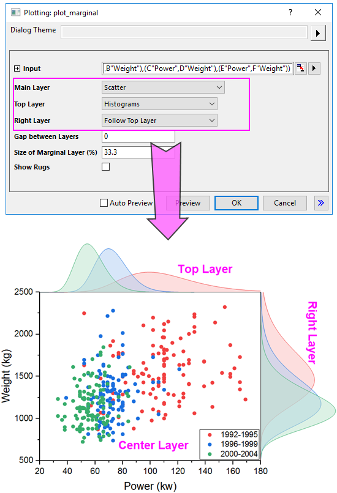

Randdiagramm
Marginal-Plot
Origin verfügt über eine X-Funktion plot_marginal, um unterschiedliche Arten von Randdiagrammen zu zeichnen. Mit dieser X-Funktion können Sie alle drei Layer für die Randdiagramme benutzerdefiniert anpassen:

Layer benutzerdefiniert anpassen
Hauptlayer
Für den Hauptlayer können Sie einen von vier unterstützten Diagrammtypen wählen:
- Punktdiagramm
- Wählen Sie diesen Diagrammtyp, um alle ausgewählten XY-Datensätze als Punktdiagramm(e) im mittleren Hauptlayer zu zeichnen.
- Punkt mit linearer Regression
- Wählen Sie diesen Diagrammtyp, um alle ausgewählten Datensätze als Punktdiagramm(e) mit individuellen linearen Regressionskurven im mittleren Hauptlayer zu zeichnen.
- Wenn dieser Diagrammtyp ausgewählt ist, werden zwei weitere Bedienelemente, Konfidenzband und Konfidenzniveau angezeigt, mit denen Sie die lineare Regression für alle gezeichneten Punktdiagramme steuern können. Das Konfidenzband wird verwendet, um ein zweiseitiges Konfidenzband für die linearen Regressionskurven hinzuzufügen, und das Konfidenzniveau wird verwendet, um das Konfidenzniveau für das Konfidenzband festzulegen.
- Konturfüllung der Kerneldichte
- Wählen Sie diesen Diagrammtyp, um alle ausgewählten Datensätze als Kernel-Dichtediagramme mit gefüllter Kontur zu zeichnen.
- Wenn dieser Diagrammtyp ausgewählt ist, werden drei weitere Bedienelemente, Bandbreitenmethode, Dichtemethode und Anzahl der anzuzeigenden Punkte, angezeigt, mit denen Sie das Aussehen der Kernel-Dichtediagramme bestimmt werden kann.
- Konturlinie der Kerneldichte
- Wählen Sie diesen Diagrammtyp, um alle ausgewählten Datensätze als Kernel-Dichte-Diagramme mit gefüllter Kontur zu zeichnen.
- Wenn dieser Diagrammtyp ausgewählt ist, werden drei weitere Bedienelemente, Bandbreitenmethode, Dichtemethode und Anzahl der anzuzeigenden Punkte, angezeigt, mit denen Sie das Aussehen der Kernel-Dichtediagramme bestimmt werden kann.
Oberes Layer
Für den oberen Layer können Sie einen von sieben unterstützten Diagrammtypen wählen:
- Histogramme
- Zeichnen Sie alle X-Datensätze im oberen Layer als ein Histogramm. Wenn es mehrere X-Datensätze gibt, zeichnen Sie sie als sich überschneidende Histogramme.
- Gestapelte Histogramme
- Zeichnen Sie alle X-Datensätze im oberen Layer als ein gestapeltes Histogramm.
- Boxdiagramme
- Zeichnen Sie alle X-Datensätze im oberen Layer als Boxdiagramme.
- Violinen
- Zeichnen Sie alle X-Datensätze im oberen Layer als Violin-/Boxdiagramme.
- Verteilungskurven
- Zeichnen Sie alle X-Datensätze im oberen Layer als Verteilungskurven.
- Verteilungskurven mit Füllung
- Zeichnen Sie alle X-Datensätze im oberen Layer als Verteilungskurven mit gefüllter Fläche.
- Histogramm mit Kurven
- Zeichnen Sie alle X-Datensätze im oberen Layer als Histogramm mit Verteilungskurve. Wenn es mehrere X-Datensätze gibt, zeichnen Sie sie als nebeneinander liegende Histogramme.
Rechter Layer
Für den rechten Layer können Sie entscheiden, ob Sie der Einstellung des oberen Layers folgen oder einen von sieben unterstützten Diagrammtypen separat dafür wählen:
- Histogramme
- Gestapelte Histogramme
- Boxdiagramme
- Violinen
- Verteilungskurven
- Verteilungskurven mit Füllung
- Histogramm mit Kurven
Abstand zwischen Layern
Passen Sie den Abstand zwischen den oberen/rechten Layern und dem Hauptlayer an. Für den oberen Layer ist der Abstand zum Hauptlayer der Prozentanteil der Höhe des Hauptlayers; für den rechten Layer ist der Abstand zum Hauptlayer der Prozentanteil der Breite des Hauptlayers.
Größe des Randlayers (%)
Passen Sie die Größe der oberen und rechten Layer an. Für den oberen und rechten Layer können Sie, da die Layerbreite mit der Breite und Höhe des Hauptlayers verknüpft ist, nur die Höhe des Layers nach Prozentanteil der Höhe und Breite des Hauptlayers anpassen.
Rugs zeigen
Legen Sie fest, ob die Rugs der Achsen für den Hauptlayer gezeigt werden. Die Rugs wurden zwischen dem Hauptlayer und oberen/rechten Layer hinzugefügt.